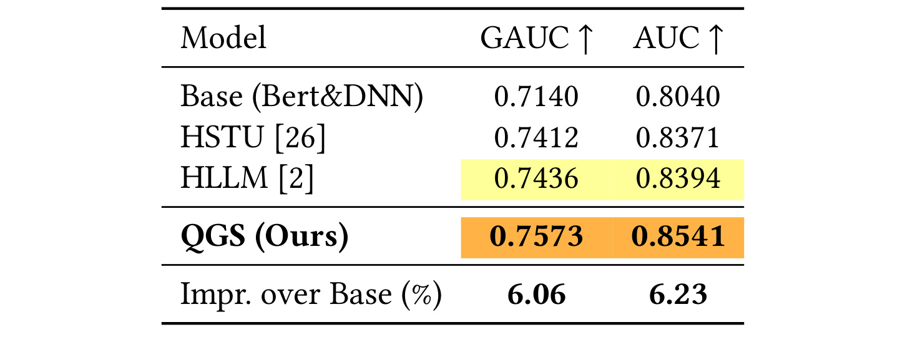
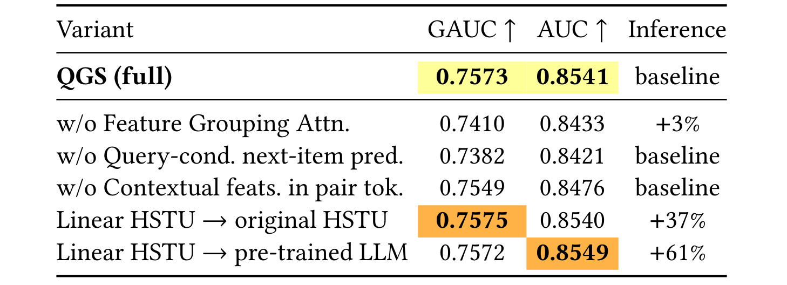
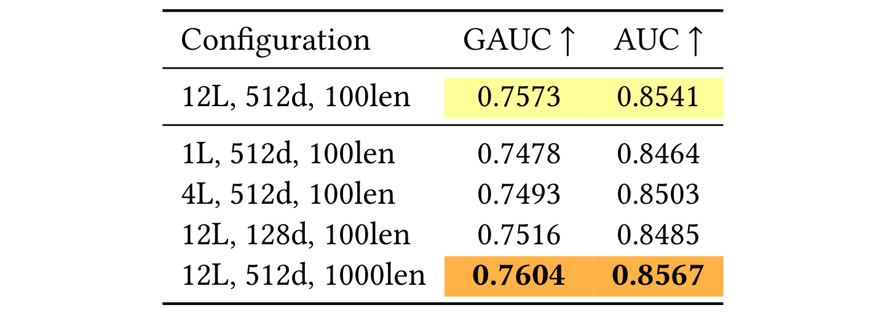
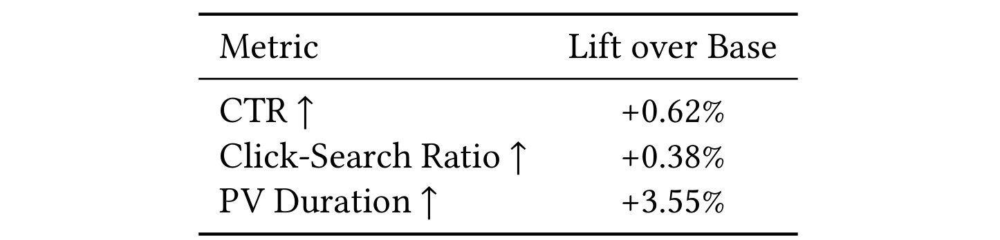

论文入口：arXiv:2605.25514。论文题目是 From Item-Only to Query-Item: Query-Conditioned Generative Search with QGS in Quark，作者包括 Yanglong Song、Zihao Yang、Shuo Meng、Rujun Guo、Jin Zhang、Bin Wang、Shaoyu Liu、Xiaozhao Wang 和 Guanjun Jiang。PDF 首页显示一作 Yanglong Song 同时列出 Alibaba Group 和 University of Science and Technology of China，其他作者主要来自 Alibaba Group，目录名沿用本轮任务指定的“多校-QGS”。主类别为推荐算法 / 搜索推荐 / 生成式排序。PDF 首页没有给出独立项目页或代码仓库，本轮未核验到官方开源实现。
这篇论文讨论的不是“再用一个更大的序列模型做搜索排序”这么简单，而是把生成式推荐迁移到搜索排序时会遇到的结构性错位拆开：推荐序列里的相邻 item 往往可以被理解为连续兴趣，搜索序列里的相邻点击却常常由完全不同的 query 触发。QGS 的核心判断是，搜索排序中的下一个 item 不是只由历史 item 决定，而是由历史交互和当前 query 共同决定；如果训练目标仍然让模型从 item-only 历史里预测下一次点击，就会把 query switch 造成的语义跳变误当成用户兴趣漂移。
1. 背景和问题
工业搜索排序通常采用多阶段级联架构：召回负责从海量文档或内容中取回候选，粗排和精排逐步压缩候选集，最终排名模型结合 query、document、user、上下文和统计交叉特征给出点击或转化概率。过去几年，Wide&Deep、DeepFM、DIN、SIM、DCN、AutoInt 这类深度排序和特征交互模型已经形成成熟范式：文本匹配、历史 CTR、位置、时段、query 类目、document 质量、实时上下文等特征被工程化地组织起来，再由 DNN 或注意力模块融合。这个体系的优点是强可控、低延迟、易于承接业务特征；缺点是它不天然把用户跨多次搜索的行为看成一个可生成的长序列。
生成式推荐给搜索排序带来了另一个方向。SASRec、HSTU、HLLM 等工作把用户行为写成自回归序列，训练模型预测下一次交互 item。这种做法在推荐场景里很自然，因为用户连续点击的 item 常常共享隐含兴趣，例如连续看同一类视频、连续浏览同一类商品、连续阅读同一主题文章。模型可以把历史 item 序列当作兴趣轨迹，下一 item 预测的监督信号虽然有噪声，但总体上仍然围绕“用户兴趣如何演化”展开。搜索场景不一样。用户每次输入 query 时都会重新定义候选集和意图空间，上一轮搜索“量子计算”的点击与下一轮搜索“古罗马历史”的点击之间可能没有连续兴趣关系。若模型只看到 item 序列，就会观察到一个从计算机科学内容跳到历史内容、再跳到饮品食谱的轨迹，却看不到每次跳变背后的 query。

Figure 1 把这个错位画得很直接。上半部分是现有 item-only 序列：query 被省略，模型只看到 Intro to Quantum Computing、History of Ancient Rome、Tropical Smoothie Recipes 等 item 依次出现。红色闪电和叉号强调这些 item 之间没有可解释的主题连续性，右侧预测式也只能写成 P(item_{t+1} / items_{<=t})，query 只在预测时被外部注入，无法解释历史序列内部为什么突然换题。下半部分是 QGS 的 query-item pair sequence：每个历史位置同时携带 query 和 item，下一步预测还显式接收 q_{t+1}。这样一来，模型看到的不是“用户兴趣无理由跳跃”，而是“用户在不同 query 下选择不同 item”。图中绿色弧线表达的不是普通序列平滑，而是把 query switch 变成因果解释；这正是论文认为 item-only 生成式搜索监督噪声大的根源。
相关工作里，论文把生成式搜索分成两类。一类是 single-query generative retrieval，比如给定 query 后生成目标 item 的 Semantic ID，这类方法更接近“query 到 item code”的生成检索，不建模同一用户跨 query 的行为演化。另一类是 user-sequence generative search，比如 UniSearch、OneSearch、GenSAR 等统一搜索与推荐的生成式框架，它们会建模用户行为序列，但 query 往往作为 prefix、外部条件或与推荐结果混排的 token 出现，没有在每个自回归步骤里把“下一 query 条件下的下一 item”作为训练目标。QGS 的切入点正是这个缺口：表示层面要把每个历史交互做成 query-item pair，目标层面还要把下一 query 放进 next-item prediction。
这篇论文的工程背景也很重要。它不是只在公开小数据集上验证一个概念模型，而是把 QGS 部署到夸克搜索的排序模块，并同时处理三件实际问题。第一，用户历史最长到 1000 次交互，普通 full attention 的 O(L^2) 成本很难满足线上排序延迟。第二，候选 item 是预测目标，不能被提前塞进历史序列，但工业排序又严重依赖 candidate 与 user、query、上下文之间的交叉特征。第三，生产排序已经积累了大量统计特征、文本特征和实时上下文，如果生成式框架只保留 dense sequence embedding，往往会丢掉成熟系统里最有价值的信号。QGS 因此不是单个模块，而是一组针对搜索排序链路的改造：Query-Item Pair Token Construction 解决序列表示问题，Query-Conditioned Next-Item Prediction 解决监督目标问题，Linear HSTU 解决长序列延迟问题，HFG-Attention 解决异构特征融合问题。
从推荐算法角度看，这篇论文值得精读的地方在于它把“生成式推荐”与“工业搜索排序”之间的边界说清楚了。搜索里的 query 不是普通 side information，也不是只在 serving 时才拼进打分头的辅助特征，而是决定下一次点击分布的条件变量。若训练时忽略这个条件，模型学到的是跨 query 的边缘分布；若训练时显式给出 query，模型才有机会学到同一用户在不同意图下的选择规律。这个视角对搜索推荐一体化、生成式排序、长历史用户建模都有参考价值，因为它提醒我们：自回归序列模型的 token 设计和训练目标必须匹配业务事件的真实生成过程，不能把推荐场景的 item-only 假设直接搬到所有排序任务里。
2. 方法
2.1 Problem Definition and Data Construction
论文把任务定义为：给定用户历史搜索交互序列，以及当前候选 query-document pair，模型要预测用户在当前 query 下点击候选 document 的概率，并把这个概率用于排序。这里的 candidate document 是当前请求的被打分对象，历史序列只允许包含请求之前已经发生的搜索行为。这个定义决定了后续所有模块的边界：历史编码器只能看过去；当前 query 可以作为本次排序请求的条件；候选 document 的某些交叉特征仍然要在最终排序头中使用，但候选 document 本身不能作为“下一 item”提前进入自回归输入。
论文用下面的形式描述用户历史搜索行为序列：
符号解释：S_u 表示用户 u 的历史搜索交互序列，q_t 是第 t 次历史搜索的 query，d_t 是该 query 下被点击或交互的 document，t_t 是交互时间戳。这个序列按时间升序排列，并且在构造训练样本时会过滤掉晚于当前请求的行为。它在方法链路中的位置是最底层的数据结构：后续的 pair token、Linear HSTU、InfoNCE 监督都依赖它提供严格因果的历史。
QGS 没有放弃工业排序的特征系统。论文保留与生产 baseline 对齐的五类特征：第一类是 query-document cross statistics，例如多时间窗口下的曝光和点击；第二类是 document-side statistics，例如独立曝光、评论数和内容质量；第三类是 query-side features，例如 query PV、query-document 时间差；第四类是 contextual features，例如展示位置、曝光时间、城市、页面索引；第五类是 textual features，即 query 和 document 的原始文本。作者特别强调，直接丢掉统计交叉特征会造成明显性能损失，单纯扩大模型规模无法补回来。这一点解释了为什么 QGS 后面还要专门设计 HFG-Attention，而不是把所有问题都交给 sequence encoder。
训练样本构造上，QGS 从线上日志聚合用户历史搜索行为。每个历史 item 不只是 document ID，而是携带 query 信息、document 信息、点击位置、点击时间、confident-click 标记、历史模型分数、多维质量信号以及页面和城市等上下文。序列最长截断到 1000，保留最近行为。这里有一个容易忽视的细节：论文不是把长历史当作离线特权信息，而是要求每个训练样本只看当前请求之前的行为，防止 timestamp leakage。对工程复现而言，最危险的错误不是公式实现，而是样本构造时把未来点击、未来 query 或当前候选 item 的信息混进历史 token，导致离线指标虚高、线上失效。
2.2 Framework Overview and Query-Item Pair Token Construction
QGS 的总体框架先把每次历史搜索交互编码成 query-item pair token，再由 Linear HSTU 建模长序列，随后用当前 query 条件化 next-item prediction，并在最终排序阶段用 HFG-Attention 融合异构稀疏特征。这个顺序和论文方法章节一致：先定义 pair token，再定义条件化训练目标，然后处理长序列复杂度，最后把工业交叉特征接回排序头。

Figure 2 是方法章的主图。左上角的 Single Token Construction 展示每个 step t 如何把上下文特征、item 特征和 BERT 语义表示拼成 feature vector，再经 Linear Projection 得到序列 token E_t。中间的 User HSTU 是历史编码器，输出 h_t；右上角的 query-conditioned next item prediction 把 h_t 与 Q_{t+1} 拼接，经 Prediction Head 与目标 item embedding 以及 in-batch negatives 做 InfoNCE。底部左侧放大了 Linear HSTU block：RMSNorm 后产生 U、Q、K、V，先做 K*V 的累计状态，再由 Q 和 U 调制输出。底部右侧是 HFG-Attention block：跨特征先做 semantic grouping，再经 HSTU attention layer 和 masked pooling，最后与 pre-next item embedding、query-doc embedding、attention embedding、DNN embedding 一起进入 top multitask。读这张图时要注意两个时态：InfoNCE 是训练监督，它约束序列表示学会 query-conditioned next-item；HFG-Attention 和 top multitask 则面向最终排序服务，负责把当前候选的交叉特征接入预测。
对于第 t 次历史交互 (q_t, d_t)，QGS 先把 query 文本和 document 文本拼接输入预训练 BERT。论文抽取两个语义表示：[CLS] token 输出 e_t^{cls} 作为 item-level semantic embedding，first [SEP] token 输出 e_t^{sep} 作为 query-level semantic embedding。同时，数值和类别特征经过 embedding lookup 得到 f_t。pair token 的核心公式是：
符号解释：x_t 是第 t 个历史交互的 pair token 原始向量，f_t 是该交互的数值与类别特征集合，e_t^{cls} 是 query-document 拼接文本经过 BERT 后的 CLS 语义向量，d_f 是特征维度，d_b 是 BERT hidden dimension，\Vert 表示向量拼接。注意 e_t^{sep} 没有被直接拼入 x_t，而是单独保留给 query-conditioned prediction head。这样做的含义是：历史 token 用 CLS 表示 query 与 document 的联合语义和上下文特征，下一步预测时再把下一 query 的 SEP 表示作为条件注入。
pair token 随后被投影到序列模型的 hidden space：
符号解释：h_t^{(0)} 是进入第 0 层序列编码器的 hidden state，W_{\mathrm{proj}} 是可学习线性投影矩阵，p_t 是位置编码。这个公式把不同来源的特征统一到 d_h 维空间，为 Linear HSTU 的层间递推做准备。它也解释了 QGS 与 HLLM 等纯语义 SID 方法的差异：QGS 的 token 不是只代表文本语义，而是代表一个完整的搜索交互事件。对于工业搜索，同一个 document 在不同位置、时间、query 质量和流量来源下的点击含义不同，若只保留文本 embedding，模型无法区分这些上下文差异。
pair token construction 的输出是一个按时间排列的 hidden sequence，输入是经过严格时间过滤的历史交互。它与上一节的数据构造相连，也与下一节的训练目标相连：如果每个 token 已经包含 query-item 关系，但训练目标仍然让模型从历史上下文中预测下一 item，而不提供下一 query，那么模型仍可能退化成 query-agnostic marginal predictor。论文因此把表示改造和目标改造分开写，这一点很关键。很多工程实现会以为“把 query 加进 token 就够了”，但 QGS 的论证是，query 需要同时出现在历史 token 和下一步预测条件里，才能真正消除 query switch 带来的监督噪声。
2.3 Query-Conditioned Next-Item Autoregressive Training Objective
QGS 最核心的目标变化是把 item-only 的边缘预测：
改成 query-conditioned 的条件预测：
符号解释：context_{\le t} 表示 t 之前的历史 pair token 序列，item_{t+1} 是下一次搜索中被交互的目标 document，query_{t+1} 是触发这次候选集合和点击行为的下一 query。前一个式子把下一 item 视为只由历史决定，适合推荐序列但不适合搜索；后一个式子承认“当前 query 是下一 item 的必要条件”，因此监督目标更接近真实搜索过程。QGS 的训练不是让模型背诵用户下一次会看什么，而是让模型回答“在这个用户历史和这个 query 下，哪个 item 更可能被点击”。

Figure 3 用训练 loss 说明这个目标差异不是概念包装。蓝线是不带 query-conditioned 的 item-only objective，橙线是带 query-conditioned 的 objective。两者使用相同生成式架构和 query-item pair token 输入，差别在于预测下一 item 时是否给出下一 query。蓝线整体更高、更抖，均值约 0.355，最低约 0.324；橙线下降更快，均值约 0.286，最低约 0.267。这个结果支持论文的判断：仅在 token 表示中记录 query 还不够，如果 prediction head 不接收下一 query，模型仍要从历史语义里解释下一次主题跳转；一旦 q_{t+1} 成为条件，原本混杂的监督被分解成更干净的 query-conditioned matching 信号。
具体训练时，QGS 对每个位置 t 取第 N 层编码器输出 h_t^{(N)}，再与下一 query 的 SEP 语义向量 e_{t+1}^{sep} 拼接，通过共享 prediction head 得到预测向量：
符号解释：z_t 是用于对比学习的预测向量，h_t^{(N)} 是因果编码器在位置 t 的历史表示，e_{t+1}^{sep} 是下一 query 的 query-level embedding，PredictHead 是与最终 ranking inference 共享的两层 MLP。公式里的关键是拼接发生在编码器之后，下一 query 不参与历史编码，只参与预测头。这保证了模型可以使用当前搜索请求的 query，同时不会把未来行为泄露进 h_t^{(N)}。
正样本是位置 t+1 的目标 item 表示 v_{t+1}=W_{\mathrm{tgt}}x_{t+1}，负样本来自同一个 mini-batch 中其他序列的对应位置。相似度使用归一化内积：
符号解释：b 和 c 是 batch 中不同序列的索引，\bar{z} 与 \bar{v} 表示 L2 normalization 后的向量，\tau 是温度系数。这个相似度把“用户历史 + 下一 query”的预测向量与候选 item 表示对齐，正样本是同一序列的真实下一 item，负样本是 batch 内其他 item。温度系数控制分布尖锐程度；若 \tau 太小，模型会过度放大 hard negative；若太大，正负样本区分会变弱。
InfoNCE 损失写作：
符号解释：\mathcal{V} 是有效非 padding 位置集合，B 是 batch size，s_t^{(b,b)} 是第 b 条序列在位置 t 的正样本相似度，分母枚举 batch 内候选负样本。这个 loss 让模型在同一 batch 内把真实下一 item 排到更高，同时利用其他序列的 item 作为对比负例。它与传统多分类 item vocabulary 的差别是更适合大规模工业 item 空间，不需要对全量 item 做 softmax。

Figure 4 把训练细节拆成两层。Part 1 中，HSTU 输出 h_t 与下一 query semantic embedding e_{t+1}^{sep} 拼接，经预测头得到 z_t；目标 item embedding v_{t+1} 经过 L2 normalize 后与 z_t 做内积，并除以温度 \tau；右侧矩阵展示 batch 内预测向量和目标向量之间的 logits。Part 2 展示两个 mask：padding mask 把无效 token 的负样本 logit 置为 -infinity；collision mask 处理不同序列同一位置恰好出现相同 item 的情况，避免把真实同类正样本误当负样本。最终 masked logits 才进入 InfoNCE。这里的工程意义很明确：搜索日志里 padding、重复 item、热门文档碰撞都很常见，如果不屏蔽 false negative，模型会被迫把本该相近的 query-item 对推远，训练目标重新变噪。
论文还专门讨论了 temporal leakage。因为训练时使用 query_{t+1}，看起来像用了未来信息，但作者的解释是：编码器严格因果，h_t^{(N)} 只由 \tau \le t 的历史决定；e_{t+1}^{sep} 是在编码器前向完成后进入 prediction head 的条件，不参与任何历史层计算。在线推理时，query_{t+1} 对应用户当前搜索 query，本来就是排序请求的输入，不是未来特权信息。这一点在搜索系统里很重要。推荐序列预测中“下一 item”通常是真未来事件，而搜索排序中“当前 query”已经发生，模型要做的是在当前 query 的候选集合里排序。QGS 的条件化目标正是把这两个概念区分开。
2.4 Linear HSTU Encoder
query-conditioned objective 需要为每个历史位置产生 h_t^{(N)}。如果历史长度最多 1000，标准 attention 的 O(L^2) query-key 交互会给线上排序带来很高延迟。HSTU 原本使用 softmax-free attention 和 U-gate，已经比普通 Transformer 更适合推荐序列，但它仍然需要构造 L x L 的交互矩阵。QGS 借鉴 RWKV 的 linear recurrence 思路，把 HSTU 的 pointwise aggregated attention 改写成元素级 key-value 累积和因果累计状态。
每层给定输入 H \in \mathbb{R}^{L \times d_h}，先做 RMSNorm，再计算四组投影：
符号解释：H 是当前层输入序列，W_Q、W_K、W_V、W_U 是可学习投影矩阵，Q、K、V、U 分别是 query-like modulation、key、value 和 output gate，SiLU(x)=x\cdot\sigma(x)。论文保留 HSTU 的 softmax-free 设计，不把 QK 转成概率分布，而是用 SiLU 提供有界下方的非线性，减轻多层乘法带来的数值不稳定。
随后不再计算完整 QK^\top，而是对每个位置做元素级 key-value 乘积：
符号解释：S_t 是位置 t 写入历史状态的局部信息，\odot 表示逐维相乘。这个式子把普通 attention 中“每个 query 与所有 key 的 pairwise score”替换成“每个位置产生一个可累积的状态向量”。它损失了显式多头两两交互，但换来线性时间更新，并依赖后续 Q、U 双门控恢复选择性。
历史信息通过带衰减的因果累计得到：
符号解释：C_t 是位置 t 的累计历史状态，\gamma \in (0,1) 是可学习指数衰减因子，\tau 是历史位置索引。递归式右边说明每一步只需要从 C_{t-1} 更新到 C_t，因此 per-step 是 O(1)，全序列是 O(L)。衰减因子带来 soft recency bias：距离更远的交互被逐渐弱化，但不是被硬截断。对于搜索历史，这比只保留最近若干点击更灵活，因为一些长期兴趣仍可能在当前 query 下有用。
输出再由 Q 和 U 双重调制：
符号解释：O_t 是当前层在位置 t 的输出候选，Q_t 根据当前位置特征从累计状态中选择相关维度，U_t 作为第二阶段输出门控过滤结果。论文强调线性递推取消了 multi-head attention，所有维度在 cumulative sum 中逐元素处理，因此 Q 和 U 的独立投影很关键：它们从不同子空间调制同一个历史状态，弥补没有显式头拆分后的表达能力。
最后，QGS 沿用 HSTU 的 FFN-free 层设计，通过 dropout 和 residual connection 得到下一层输入：
符号解释：H^{(\ell)} 是第 \ell 层输入，H^{(\ell+1)} 是下一层输出，O 是整段序列所有位置的调制输出。作者认为 SiLU 与 Q-U 双乘法调制已经提供足够非线性，因此在线性 HSTU encoder 内去掉 FFN，减少延迟和参数计算。论文实验使用 12 层、hidden dimension 512 的 Linear HSTU，并取最后 token 位置输出作为用户 next-item prediction representation h_{\mathrm{seq}}。
这组公式把复杂度从 O(L^2 \cdot d_h) 降到 O(L \cdot d_h)。但它不是简单地把 Transformer 换成任意 linear attention。QGS 保留了 HSTU 对推荐序列有效的两个机制：softmax-free 避免 attention sink 并允许直接 value accumulation，U-gate 提供输出侧筛选。对搜索排序服务来说，这个选择很现实：用户历史越长，query-conditioned objective 越需要足够长的上下文；但精排请求又要为大量候选打分，任何 O(L^2) 模块都会迅速变成瓶颈。Linear HSTU 因此是 QGS 能进入线上系统的条件之一，而不是可有可无的模型替换。
2.5 HFG-Attention and Final Ranking Fusion
pair token、条件化目标和 Linear HSTU 解决的是用户历史序列建模，但还没有解决候选 item 与当前用户、query、上下文之间的 cross feature。工业搜索排序中的许多强特征恰恰是候选相关的，例如 query-document 匹配分、position-dependent CTR、实时曝光反馈、历史质量分和多窗口统计。由于候选 item 是 prediction target，不能作为历史输入提前进入 sequence encoder；如果最终排序头只使用 h_{\mathrm{seq}} 和 query embedding，就会丢掉生产 baseline 长期积累的异构稀疏特征。HFG-Attention 的作用就是把这些 cross features 在顶层重新接回生成式框架。
论文先按语义把稀疏特征分成 G 个 group。每个 group g 内部的 sparse features 经过 embedding lookup 后拼成 r_g \in \mathbb{R}^{d_g}，再投影到统一维度：
符号解释：r_g 是第 g 个语义组的原始 embedding 拼接，W_g 与 b_g 是该组的投影参数，\phi 是非线性变换，d_e 是所有组共享的目标维度。这个公式的目的不是降维本身，而是先把来源不同、维度不同、语义空间不同的稀疏特征对齐到同一 embedding 空间。若直接把所有 sparse embedding 与 dense sequence representation 拼接，模型需要同时学习对齐、交互和预测，难度更高且容易被强统计特征主导。
为了让 grouping attention 感知全局特征上下文，QGS 还把 shared DNN 对所有 raw features 产生的 h_{\mathrm{dnn}} 投影到 d_e 维，作为 global context token 追加到 group token 序列：
符号解释：R 是 HFG-Attention 的输入 token 序列，\tilde{r}1 到 \tilde{r}_G 是各语义特征组，\tilde{h} 是全局上下文 token。这里的 \Vert 表示按 token 维度连接，而不是把所有特征压成一个扁平向量。这样设计后，attention 可以在 group 之间建模“哪些稀疏特征组合在当前 query-document-user 状态下有用”，而不是只让 DNN 在全量拼接向量上做隐式交叉。}
R 被送入单层标准 HSTU attention。因为 G 很小，HFG-Attention 不需要使用线性递推；标准 O(G^2) group interaction 的成本可以接受。与 Linear HSTU encoder 不同，这里的 HSTU attention 保留 FFN。原因是 sparse feature groups 的语义差异很大，单靠 attention 加权不足以完成非线性融合，FFN 可以在统一 embedding 空间里进一步混合不同组。输出经过 masked average pooling，再投影到最终融合维度：
符号解释：h_{\mathrm{sparse}} 是 HFG-Attention 产出的稀疏特征融合向量，W_{\mathrm{out}} 是输出投影，MaskedAvgPool 会忽略不存在或无效的 group token，d_o 是融合输出维度。它与 h_{\mathrm{seq}} 的职责不同：h_{\mathrm{seq}} 表示历史 query-item 序列在当前 query 条件下的长期兴趣，h_{\mathrm{sparse}} 表示当前候选相关的稀疏交叉证据。
最终排序阶段把 h_{\mathrm{sparse}}、candidate document embedding、shared-DNN-encoded vector h_{\mathrm{dnn}}、Linear HSTU 的 sequence representation h_{\mathrm{seq}} 拼接，经 LayerNorm 后进入 downstream task towers。论文里的 top multitask 说明 QGS 并不是只训练一个离线 InfoNCE 目标后拿 embedding 做最近邻，而是继续服务于工业 CTR 等多任务排序预测。训练时，InfoNCE 约束历史编码器和 prediction head 学会 query-conditioned next-item；服务时，当前 query、候选 document、稀疏交叉特征和历史表示一起进入排序头。这样的设计也解释了为什么 QGS 能与生产 deep ranking baseline 对齐，而不是替换掉整个搜索系统的所有特征工程。
从模块连接看，QGS 的输入输出链路可以总结为四段。第一段，日志构造 S_u，过滤未来行为并截断到最大历史长度。第二段，每个历史交互变成 x_t，再经 Linear HSTU 得到 h_t^{(N)} 和 h_{\mathrm{seq}}。第三段，训练时用 e_{t+1}^{sep} 和 InfoNCE 让 h_t^{(N)} 对下一 query 下的下一 item 负责，避免 query-agnostic collapse。第四段，推理时把当前 query 与候选交叉特征通过 HFG-Attention 和 top towers 融合，输出 CTR 等排序分数。每一段都对应论文提出的一个具体搜索痛点：query switch 噪声、长历史复杂度、候选交叉特征缺失、训练服务不一致。
3. 实验结果
3.1 Experimental Setup：数据、baseline 和指标
论文提出四个实验问题：RQ1 问 QGS 是否优于强 baseline；RQ2 问各模块分别贡献多少；RQ3 问 depth、width、sequence length 扩展是否有效；RQ4 问离线收益能否迁移到线上指标。作者没有使用公开搜索数据集，而是使用夸克搜索生产日志。理由有四个：公开数据通常缺少长期用户行为和实时 session signals；公开数据缺少细粒度 user-item cross features 与统计特征；公开数据规模远小于工业搜索日志；线上 A/B 才能验证端到端部署效果。

Table 1 给出离线数据规模：训练集有 37.87M 用户、154.77M 搜索、488.58M impressions 和 82.58M clicks；测试集有 2.10M 用户、8.60M 搜索、27.14M impressions 和 4.59M clicks。这个规模说明实验不是小样本概念验证，也解释了为什么作者强调生成式排序需要生产日志才能训练。表中没有公开 query 或 document 内容，因此它不能支持外部复现；但它能支撑论文关于“线上工业搜索排序”的主张。对读者来说，关键是把这些数字与后续 AUC/GAUC、线上 CTR lift 放在一起看：数据足够大，指标提升若稳定，就更可能来自建模结构而不是偶然切分。
Baseline 包括三类。Base 是已部署的 BERT&DNN 生产判别式深度排序模型，代表成熟工业范式。HLLM 使用 Item LLM 和 User LLM，二者都从预训练 BERT 初始化，配置为 12 层 Transformer、12 heads、hidden size 768，每个序列 token 只携带文本语义 embedding，不含上下文特征。HSTU 使用标准 pointwise aggregated attention，配置 12 层、8 heads、hidden size 768。作者排除了 OneSearch、UniSearch、GenSAR，因为这些方法面向 retrieval-oriented generation 或统一搜索推荐，不完全适配本文严格延迟和丰富 cross feature 的 ranking protocol。离线指标是 AUC 和 GAUC，其中 GAUC 按 search request 聚合 AUC，更贴近同一次搜索内候选排序质量。线上指标是 CTR、Click-Search Ratio 和 PV Duration。训练使用 Adagrad、学习率 0.01、batch size 100、8 张 NVIDIA A800；对比实验统一 sequence length 100，以控制 baseline 公平性。
3.2 Overall Performance Comparison：离线主结果

Table 2 是主结果表。Base 的 GAUC/AUC 为 0.7140/0.8040，HSTU 为 0.7412/0.8371，HLLM 为 0.7436/0.8394，QGS 达到 0.7573/0.8541。相对 Base，QGS 的提升是 GAUC +6.06%、AUC +6.23%；按绝对点数看，GAUC 从 0.7140 到 0.7573，提升 4.33 点，AUC 从 0.8040 到 0.8541，提升 5.01 点。更重要的是，QGS 不只是超过传统生产模型，也超过 HSTU 和 HLLM 两个生成式或序列式 backbone。相对 HSTU，GAUC 提高 1.61 点，AUC 提高 1.70 点；相对 HLLM，GAUC 提高 1.37 点，AUC 提高 1.47 点。这支持论文的核心主张：搜索排序收益不只来自“换成生成式序列模型”，还来自 query-item 条件结构、上下文 pair token 和候选交叉特征融合。
这张表也有一个需要谨慎解读的地方。Base 是生产 BERT&DNN，HSTU/HLLM 是按本文 ranking protocol 适配的生成式 baseline，但论文没有展示更细的调参预算、特征对齐细节或模型参数量完全公平性。因此 Table 2 能强力说明 QGS 在作者的 Quark Search 实验设置里有效，却不能单独证明所有搜索系统都应替换为同样结构。它最可靠的结论是方向性的：在 query switch 明显、长历史可用、特征系统丰富的工业搜索里，显式 query-conditioned generative ranking 比 item-only 生成式建模更适合。
3.3 Ablation Studies：组件贡献与延迟权衡

Table 3 把 QGS 的收益拆开。完整模型 GAUC/AUC 为 0.7573/0.8541。去掉 Feature Grouping Attention 后，指标降到 0.7410/0.8433，推理延迟还增加 3%；去掉 query-conditioned next-item prediction 后，降到 0.7382/0.8421；去掉 pair token 中的 contextual features 后，降到 0.7549/0.8476。把 Linear HSTU 换成 original HSTU，GAUC/AUC 几乎不变，0.7575/0.8540，但延迟增加 37%；换成 pre-trained LLM，AUC 到 0.8549 略高，GAUC 为 0.7572，延迟增加 61%。表中最明显的结论是，query-conditioned objective 的贡献最大，删除后 GAUC 降 1.91 点、AUC 降 1.20 点；HFG-Attention 次之，删除后 GAUC 降 1.63 点、AUC 降 1.08 点。
这个消融结果和方法逻辑相互印证。若只看 Figure 2，读者可能以为 QGS 的主体是 Linear HSTU；但 Table 3 显示，Linear HSTU 的作用更多是效率可部署，质量上 original HSTU 几乎相当。真正拉开指标的是 query-conditioned prediction 和 HFG-Attention。前者解决监督噪声，后者把 candidate 相关的工业交叉特征接回生成式框架。contextual features in pair token 的消融幅度较小但不为零，说明文本语义并不能完全解释同一个 document 在不同位置、时间、场景下的点击差异。对工程落地来说，这张表的含义是：如果只能先复现一部分，优先保证目标函数和候选特征融合；如果系统延迟吃紧，再用 Linear HSTU 替换 full attention，而不是指望更重的预训练 LLM 自动带来免费收益。
3.4 Scalability：深度、宽度和长历史

Table 4 测试 QGS 随 encoder depth、hidden dimension 和 sequence length 的变化。默认配置 12L、512d、100len 的 GAUC/AUC 是 0.7573/0.8541。1L、512d、100len 只有 0.7478/0.8464，4L、512d、100len 提升到 0.7493/0.8503，12L、128d、100len 为 0.7516/0.8485，12L、512d、1000len 达到 0.7604/0.8567。作者强调最长序列从 100 扩到 1000 后，GAUC 增加 0.31 点，AUC 增加 0.26 点；深度从 4 层到 12 层带来 0.80 GAUC 和 0.38 AUC；hidden dimension 从 128 到 512 也带来 0.57 GAUC 和 0.56 AUC。
这张表证明了两个点。第一，Linear HSTU 不是只为低成本牺牲表达能力，它仍能从更长历史、更深层数、更宽 hidden 中获得收益。第二，长历史对搜索排序有实际价值，但收益不算爆炸式增长，这符合搜索场景特征：当前 query 强烈约束候选意图，历史行为提供个性化和偏好补充，而不是完全决定排序。Table 4 没有给出每个配置的线上延迟，因此不能直接选择最优部署点；但结合 Table 3，可以推断 1000len 的可行性来自线性复杂度。如果使用 original HSTU 或普通 Transformer，1000 历史长度的线上排序成本很可能不可接受。
3.5 Online A/B Experiment：线上迁移

Table 5 是线上验证。QGS 被部署在夸克搜索 CTR prediction module，与生产 baseline 在 2% 流量上连续 A/B 7 天，每天覆盖数百万曝光，论文报告所有 lift 都达到 p < 0.05。结果是 CTR +0.62%，Click-Search Ratio +0.38%，PV Duration +3.55%。CTR 提升说明排序更能促成点击；Click-Search Ratio 提升说明至少一次点击的搜索占比提高；PV Duration 提升则暗示用户在点击后停留更久，排序结果不只是吸引点击，也更可能满足意图。
线上指标的幅度相对离线 AUC 看起来小，这是工业排序常态。生产 baseline 已经很强，线上流量存在探索、位置偏置、供给波动、query mix 变化等因素，0.62% CTR lift 若统计显著通常已经有业务价值。更值得注意的是三个指标方向一致，尤其 PV Duration 提升较大，降低了“只优化点击诱导”的担忧。不过论文没有披露更多分桶结果，例如不同 query 类目、长尾 query、新老用户、冷启动 document、移动端入口等表现；也没有给出线上延迟绝对值、资源成本或回滚策略。因此 Table 5 可以证明 QGS 在夸克搜索生产流量上有效，但还不能回答它在其他搜索系统中的收益边界。
综合实验部分，证据链是完整的：Table 1 说明数据规模，Table 2 说明主效果，Table 3 指出关键模块，Table 4 说明线性编码器下扩展仍有效，Table 5 证明线上可迁移。最强的证据是消融与线上结果同时支持方法主张，而不是只靠主结果表。相对薄弱的部分是外部可复现性和公开数据对照：由于核心特征、日志和线上系统不可公开，读者只能依据论文披露的配置和表格判断可信度，无法独立复测所有结论。
4. 总结
4.1 我的判断
QGS 的价值在于把生成式搜索排序的两个问题分开解决：表示上，每个历史位置必须携带 query-item pair；目标上，下一 item 预测必须条件化在下一 query。这个设计比“把 query 拼进输入”更彻底，因为它改变了监督分布。Linear HSTU 和 HFG-Attention 则让这个目标能放进工业排序链路：前者保证长历史在线可算，后者保留候选交叉特征和生产特征系统。对搜索推荐工程来说，这篇论文最有启发的是目标函数口径，而不是某个单独 backbone。
4.2 局限与风险
第一，实验完全依赖夸克搜索生产日志和线上 A/B，外部研究者难以复现，公开数据上的泛化证据不足。第二，HFG-Attention 只做 group-level 语义融合，论文自己也承认还没有探索 RankMixer 一类更细粒度 token-level feature interaction，候选交叉特征可能还有提升空间。第三，长历史评估仍局限在固定窗口，虽然最长到 1000，但用户全生命周期兴趣、跨设备行为、超长稀疏历史的有效性没有验证。第四，线上实验报告了整体 lift，却没有分 query 类型、用户群、内容供给、延迟资源和失败 case；如果某些垂类 query 对历史个性化不敏感，QGS 的收益可能被整体平均掩盖。第五，query-conditioned objective 需要高质量 query-item 日志和严格时间过滤，日志延迟、点击噪声、重复 item 处理不当都会破坏训练信号。
4.3 后续跟进
后续我会优先关注三点。第一，看是否有开源实现或后续技术报告披露 QGS 在更多 query 类目、召回/粗排/精排不同阶段的效果，因为这决定它是通用搜索排序范式还是夸克场景特化方案。第二，关注 query-conditioned generative ranking 与 diffusion/generative retrieval、LLM reranking 的组合方式，尤其是能否把 query-item objective 用作预训练，再接更复杂的 reranker。第三，关注 HFG-Attention 的替代模块，例如 token-level sparse feature mixer、cross network 与 Linear HSTU 的联合建模；Table 3 已经说明 feature grouping 是关键收益来源，未来提升很可能不只来自更长序列，而来自更细的候选特征交互。